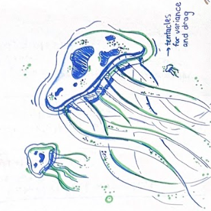
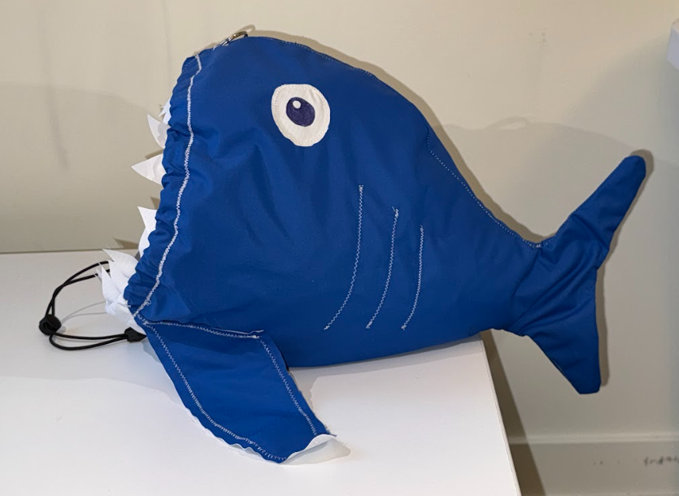
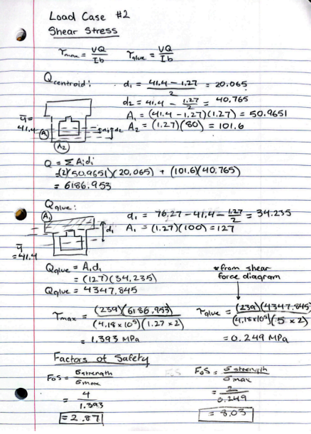
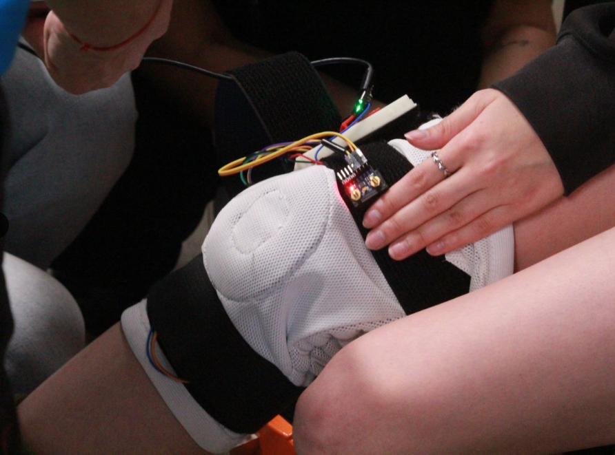
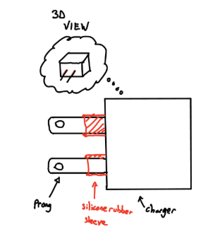
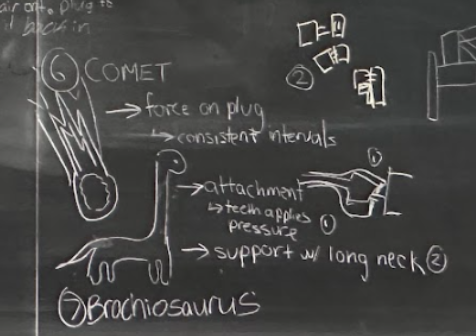
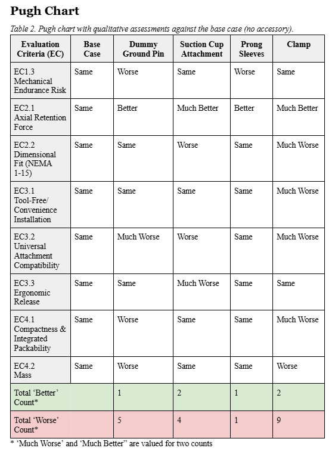
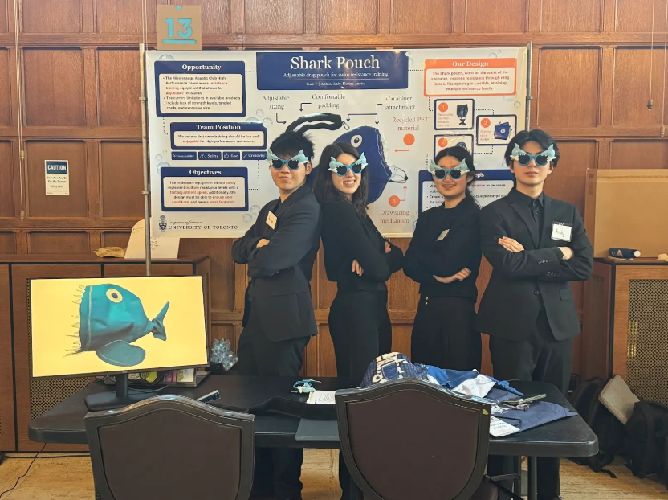
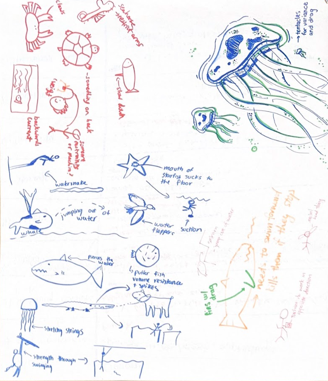
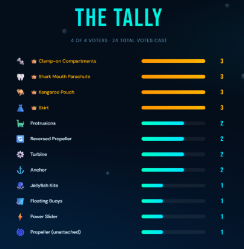

Welcome to the Room
Look Around
Click and drag anywhere in the sketch to rotate your view. Sweep left or right to pan through the room. Use your scroll wheel to zoom in or out.
Find my Notes
Paper icons are floating around the room. Each page is a pop-up. Click it to open a draggable window with project notes, reflections, or references. Every click fills the progress bar above.
Quick Tip
Start by looking to the right, that's where you'll find my revised position statement. But, just like how engineering design isn't linear, feel free to explore in all directions!
Thank You
These are the people I worked alongside throughout the year. Every idea in this portfolio was made sharper, stranger, or more exciting by working with them.
Praxis I · Fall 2025
Praxis II · Winter 2026
CIV102 · Fall 2025
UTBiome · Winter 2026
My Position as a Designer
Updated Position: Jan 2026 → Apr 2026. I'm still largely influenced by jazz, but I've realised something broader: I am a mosaic of my interests. Even art and film give me a perspective of engineering that I carry into the real world.
Position Statement · Praxis II · January 2026
Introduction
My previous position statement argued that jazz informs how I design, through ensemble sensitivity, chord changes, and vocabulary. This remains true, but this past semester has brought a broader realization: I am a mosaic of my artistic interests. Other forms of expression, like art and film, each offer a perspective of the engineering design process that I carry into my design work, helping me sketch in the details and fill in the blanks for things that are unclear. At its core, design is an exploration, a process of colouring in and out of the lines to bring ideas into focus
Art: Design through Perspectives

A painter does not describe a landscape; they reveal it, one deliberate stroke at a time. This semester, visual mediums, like sketches, colors, technical drawings, and CAD work were essential in discovering and communicating ideas. Different visualizations reach different audiences and surface different kinds of feedback: rough sketches lay groundwork and invite pushback, technical drawings establish precision, and aesthetic renderings communicate feel. In our Praxis II work, presenting a sketch rather than describing an idea changed the team atmosphere and the type of communication that comes with it. Teammates could point at it, draw over it, and make their own renderings, before anything was precious. For example, when conducting the biomimicry diverging process, my jellyfish marker drawing were the carriers of function and feel. Using visual language is as important as the idea it carries.
Movies: Design as a Narrative

Every great film begins with a question no one has quite articulated yet, and then spends two hours making you feel the answer. Engineering design works the same way. For our Praxis II project, our narrative crystallized early: make resistance training not feel like a chore. We wanted to foster an environment where swimmers come to practice with a design that feels like a buddy or companion. That description told us who our user was, what approach we wanted to take, and what success would feel like before we had drawn a single concept. With that story in place, stakeholder needs stopped being a checklist and became something more coherent. A film about everyone is about no one, and a design without a specific person, tension, and resolution is rarely effective.
The Room You're Reading This In
This statement lives in a sketched, interactive room, with text in my own handwriting. This was done deliberately to allow the audience to peer into my personal experiences and interests that shape my design process. Additionally, the form mirrors the argument. Art gives us a way of seeing the real world before we can fully describe it, and engineering is the process of uncovering what's behind the sketch.
Conclusion
Jazz, art, and film are not hobbies I leave at the door when I enter a design process. They are the lenses through which I read a problem, communicate with a team, and understand a stakeholder. In engineering design, the hardest part is rarely the solution; it is developing a clear enough picture of the problem that the solution becomes obvious. My interests have taught me to do exactly that: to listen for what a chord change is asking for, to show rather than describe, and to find the human story underneath a technical requirement.

Summary
The CIV102 project tasked our team, The Tubby Tributaries, with designing and building a matboard bridge capable of supporting a moving weighted freight train. Starting from a given cross-section, Iteration 0, we iteratively refined the design over six major cycles, using hand calculations and MATLAB code to evaluate failure modes and factors of safety at each stage. Iteration 0 established the baseline: a standard I-beam profile that immediately failed Case 1 buckling with a factor of safety below 1. From there, each iteration addressed a specific structural weakness; doubling the top flange thickness, relocating the bottom flange to the top to shift the centroidal axis, closing the gap between Case 1 and Case 2 buckling by tightening web separation, and extending the web height to 120 mm to boost the second moment of area. Stiffeners were added at splice points and supports to restrain the webs, and a central diaphragm was placed at midspan to resist shear buckling within the remaining material budget. The final pi-beam achieved a minimum factor of safety of 2.27 and was projected to sustain 1395 N before failure by shear.
My position statement argues that design is a process of uncovering — filling in the blanks through exploration until something real comes into focus. This bridge was that argument made physical. Iteration 0 was a given sketch, a starting point rather than a solution, and its factor of safety below 1 made clear the real design work had not yet begun. Each iteration revealed a new failure mode, which demanded new understanding, which produced a new iteration. The hand-drawn cross-sections at each stage were not just documentation — they were thinking tools. And our narrative was specific from the start: build the lightest bridge that survives the moving load. That sentence oriented every tradeoff. A design without a clear narrative drifts; ours had a direction.
Concepts, Tools, Models & Frameworks

What it is: A decision-making cycle describing how designers move from observation to action — perceiving a condition, interpreting its structural meaning, assessing the available responses, and acting to modify the design.
How I used it: PIAA was the natural rhythm of every iteration. We perceived a weakness in the factor of safety output, interpreted it by tracing it back to the relevant equation and identifying the controlling variable, assessed the tradeoffs of each possible fix in MATLAB, and then acted. The decision to add stiffeners is the clearest example: we perceived that Case 4 buckling had become critical after extending the webs, interpreted it through the effective column length relationship, assessed that stiffeners at high-shear locations would be most effective, and built accordingly.
Assessment: PIAA was not a formal checklist — it was how iteration actually felt. Its value is in making that instinctive cycle conscious and repeatable. Looking back, the iterations where we skipped straight from perceiving to acting, without a proper interpret and assess phase, produced the least efficient changes.
What it is: Perry's model describes how learners progress from received knowledge — accepting facts as given — toward constructed knowledge, where they form independent positions through evidence and reasoning.
How I used it: CIV102 lectures introduced the buckling equations and bending stress formula as received knowledge. Iteration 0 was given to us in the same spirit. But from Iteration 1 onward, the work became constructive: we had to decide which failure mode to address first, hypothesize that removing the bottom flange would shift the centroidal axis favorably, and reason independently that the gap between Case 1 and Case 2 buckling was worth closing before anything else. The equations stopped being a checklist and became a language we spoke back with our own ideas.
Assessment: Perry's model captures what made this project genuinely educational: the transition from following a framework to building within it. The risk of staying in received knowledge mode is designing by imitation — iterating the professor's cross-section without understanding why. Pushing into constructed knowledge is what produced the pi-beam.
What it is: Using equations and code as a design environment — building the bridge in MATLAB before touching any matboard, so that structural behaviour can be tested, compared, and optimized across hundreds of configurations in minutes.
How I used it: Every failure formula — buckling, shear, flexure — was encoded into MATLAB so that changes to web height, flange thickness, or web separation could be evaluated across all failure modes simultaneously. The optimal web separation of 58 mm and glue tab length of 15 mm were not guessed; they were solved. Mathematical prototyping compressed the iteration cycle dramatically and gave physical intuition a rigorous feedback loop.
Assessment: The single most powerful tool in the process. Its limitation is that the model is only as good as its assumptions — local glue joint failures and construction imperfections were not captured, which meant the predicted failure load and the physical one diverged. The math does not know what your hands do.

Summary
Quantiflex aims to improve the rehabilitation of patients who have undergone ACL tears. Current equipment is insufficient or costly, which makes quality care inaccessible. Additionally, clinical diagnosis often follows vague questions, like “Does this feel okay,” rather than quantitative measurement. I worked with the UTBIOME Design Team, including four members on the software and data analysis team, that has addressed the opportunity through the Quantiflex Knee Sleeve. The Quantiflex Knee Rehabilitation Sleeve is a three-layer system: a wearable hardware layer using Myoware EMG sensors and IMUs, an edge-processing layer running on an ESP32-S3-Zero microcontroller, and a web dashboard built in HTML, CSS, and JavaScript. Data is transmitted live through a WebServer hosted by the microcontroller, where the user connects to a local Wifi. The site classifies exercises such as squats, gait cycles, and each movement can be used to track trends across a rehabilitation period. It also includes a user sign in, through OAuth and manual login, that saves patient data. The frontend provides separate, authenticated experiences for clinicians and patients. Clinicians see real-time tracking, adherence analytics, and a progress dashboard; patients see accessible visualizations of their own recovery. Each recording session is accessed through a simple click, and the recordings are replayable to analyze any outlying data. A web-based approach was chosen over a native application for universal accessibility across devices without requiring installation. The final system translates raw sensor readings into actionable rehabilitation metrics, cross-referenced against clinical ROM standards, with a high degree of accuracy and repeatability. This project was demonstrated at the True North Biomedical Competition in London, where it was introduced to industry judges. These judges provided a few next steps, such as identifying how to secure patient data, further verification testing, and important hardware considerations.
My work with UTBIOME was where design as a narrative proved to be important. To design for those with ACL tears, we needed to understand the patient experience and how the design would go hand in hand. First, we needed to address patients who commonly undergo ACL tears, like athletes. For example, the knee would be better if it had patella support and a soft, stretchy material for physical rehab. Then, we needed a glimpse of the current market, where there is very little affordable knee care. These illustrations of what the knee sleeve space looks like helped guide us in determining what type of product to make.
Concepts, Tools, Models & Frameworks

What it is: The Hoover Dam model frames engineering design as a set of arguments about the world. Every modelling choice — what you measure, who you design for, what you leave out — reflects a value system. The dam's designers made arguments about whose needs mattered. Today, the dam struggles with low water levels, and its construction displaced Indigenous communities who were never recognized as stakeholders. The lesson: design encodes perspective, and that perspective has consequences.
How I used it: The existing market for knee rehabilitation reflects the same blind spot. Lab-grade systems like Vicon and BTS GAITLAB cost upward of $50,000 and are limited to hospital settings. Consumer wearables track only accelerometer data, missing the EMG signals needed to detect muscle guarding and co-contraction. Neither system was built with the at-home rehabilitation patient as a genuine stakeholder. Applying the Hoover Dam lens forced us to ask: who is currently excluded by the way this problem has been framed? The answer shaped our entire design — a web-based, clinician-facing dashboard that makes data accessible to the people who actually need it.
Assessment: The most important framing tool in this project. Without it, we risked building a technically impressive system that served no one outside a hospital. Its limitation is that it is easy to identify excluded stakeholders and harder to actually design for them — the empathy gap between framing and execution is real.

What it is: A structured framework that moves from high-level stakeholder needs to measurable engineering objectives. Needs capture what the user actually requires. Goals translate those into design intentions. Objectives make them testable — specific, quantifiable targets that a design can be evaluated against.
How I used it: The underlying need was clear: ACL rehabilitation outcomes are worse when clinicians cannot monitor patients remotely. The goal became delivering objective, accessible data to physiotherapists between clinic visits. From that goal, objectives followed — exercise classification accuracy above a target threshold, ROM tracking in degrees against clinical reference ranges from CDC normative data, and data persistence through connection loss via RAM or SD card storage. This hierarchy prevented us from designing for technical elegance at the expense of clinical utility. The question was never "what can we build?" but "what does recovery actually require?"
Assessment: NGO was essential for keeping a multidisciplinary team aligned. Hardware, software, and clinical considerations each pulled in different directions — having shared, measurable objectives gave us a common language. The risk is treating objectives as a checklist rather than a design compass; the numbers matter, but so does the reasoning behind them.

What it is: A design method that breaks a complex system into its fundamental sub-functions, each of which can be designed, tested, and evaluated independently before being integrated into the whole.
How I used it: Applied specifically to the software layer, which risked becoming an undifferentiated mass of code without a clear structure. Decomposing it revealed five distinct sub-functions: EMG and IMU signal input, real-time signal processing, exercise classification logic, session recording and data storage, and analytics and dashboard visualization. Each sub-function had its own requirements and could be developed in parallel across the team. The recording feature — naming sessions by patient, exercise, date, and session number — emerged from decomposition as a discrete problem with a discrete solution. So did the signal processing pipeline, where a 50Hz high-pass filter and RMS calculation were identified as the minimal viable operations to convert raw EMG into a clinically interpretable metric.
Assessment: Functional decomposition was what made a project of this complexity manageable. Without it, integration failures would have been untraceable. Its limitation is that real systems have cross-cutting concerns — authentication, data privacy, and connection loss handling did not belong neatly to any single sub-function, and those seams required extra attention.

Summary
The opportunity addressed was a recurring problem in student spaces at UofT: NEMA 5-15R outlets worn through repeated use lose the friction needed to hold a plug in place, causing intermittent charging and disconnection. We began by identifying the primary stakeholders: Engineering Science students who depend on consistent device power throughout the day. Then, through an exploration of stakeholder interviews and the technical issue, we wrote a design brief highlighting the background, needs, and reference designs that were relevant. Requirements were defined across four goals: safety (flammability rating, insulation resistance, mechanical endurance), reliable contact (axial retention force increased by at least 30% to a minimum of 13 N), usability (tool-free installation, ergonomic removal under 52 N), and portability (combined assembly fitting within 90 × 90 × 40 mm). When determining solutions for the issue, we went through a variety of diverging tools, like Random Input, and then converged with tools like a Pugh Chart. The final recommended design, the prong sleeve, is a small elastomeric attachment that fits over the blades of a NEMA 1-15 plug, increasing the friction force between blade and receptacle contact without modifying the outlet itself.
This was the first time design felt like jazz improvisation. Random Input gave us strange words, like “Love,” “Lantern,” and "Brachiosaurus." There was no other choice than to take chalk and go through any ideas we had on the chalk board. Slowly, valid features and concepts started to form, as was the status quo bias we had before the diverging session. Following this, the “Brachiosaurus” somehow became a bracket concept that provides support for the charger; a testable design!
Concepts, Tools, Models & Frameworks

What it is: A creative thinking strategy pioneered by Edward de Bono in which random nouns are generated and then morphed to fit within the solution space. The constraint of the word forces the mind out of familiar patterns and into novel territory.
During my Praxis I project, my team generated nouns such as love, glacier, and Brachiosaurus, linking each to potential outlet solutions. The long neck of the Brachiosaurus led directly to a concept using a physical bracket to prevent plug withdrawal. Beyond the ideas themselves, this tool was essential for breaking the Anchoring Effect, which is the cognitive bias that causes teams to pivot all concepts off a single reference design. It also fostered a Team B dynamic because the absurdity of the nouns lowered our filters and created a safe space for unfiltered sharing.
This taught me that the strength of a divergence tool often lies in its irrationality. By forcing a detour through unrelated concepts, I can bypass the mental grooves that produce predictable ideas. In my future work, I will use Random Input specifically to disrupt team anchoring when a project feels stagnant. I also plan to cultivate psychological safety early in my professional collaborations to ensure my teams feel comfortable exploring the irrelevant connections that often yield the most innovative results.

What it is: Kolb's theory posits that learning is cyclical, moving through four phases: Thinking, Acting, Experiencing, and Reflecting. Each phase feeds the next, and the cycle repeats with deepened understanding at every pass.
I began in the Thinking phase by sketching the design and predicting its retention force. Acting involved construction using household materials like elastic bands and tape, but the crux of my learning arrived during the Experiencing phase. I found that the suction force was unreliable and required moisture to seal, which raised significant safety and accessibility concerns. Reflection reframed this experience not as a failure but as evidence that the design space had shifted based on physical reality.
This taught me that learning concentrates at the moment of contact between expectation and reality. In the future, I will design every prototype with this specific crux in mind, ensuring I move to the Acting phase as quickly as possible to test my assumptions. I plan to use the Reflecting phase to systematically update my design requirements after each physical test. I also intend to apply this cyclical approach to complex systems programming by testing code in real-world environments early to trigger the Experiencing phase before my mental model becomes too rigid.

What it is: A structured comparison matrix that evaluates multiple design concepts against a common set of weighted requirements. Each concept is scored relative to a baseline or reference design, as better, worse, or equivalent across each criterion.
After diverging, I had several distinct concepts on the table, including the prong sleeve, a suction cup attachment, and an adhesive friction pad. I used a Pugh chart to map each against our four requirement goals of safety, axial retention, usability, and portability. The chart revealed that the suction cup, which felt promising during ideation, actually scored poorly across both safety and usability once the requirements were applied systematically. By contrast, the prong sleeve satisfied the most criteria, and the chart even surfaced hybrid possibilities like using the friction pad's material properties in the final sleeve. I learned that the Pugh chart is most valuable as a conversation tool because filling it in forced my team to agree on requirement definitions before scoring.
This experience taught me that systematic evaluation is essential for surfacing disagreements that might otherwise stay hidden until the wrong concept is built. In my future work, I intend to use weighted decision matrices to ensure that critical factors like safety are prioritized over secondary goals like portability. I also plan to conduct stakeholder verification alongside these charts to ensure our scoring reflects the true needs of the user rather than just internal team consensus.

Summary
The Shark Pouch addresses the limitations of existing swim resistance equipment, such as drag socks with limited resistance and bulky power towers that hinder portability. The design consists of an rPET drag pouch and an adjustable belt worn at the abdomen. Using a drawstring mechanism, the pouch opening adjusts from 22.7 to 33.8 cm in diameter, allowing for continuous resistance adjustment between 95 and 210 N. The carabiner attachment keeps the pouch at the swimmer's underside to avoid interference with arm strokes or flip turns, while the rPET material ensures the design is durable, chlorine-resistant, and sustainable. Our team reached this solution through an extensive diverging process, using 6-3-5 brainwriting and the Lotus Blossom technique to generate over 70 initial ideas. We used morph charts to isolate key functions, such as attachment location and resistance adjustment, which led us to move away from traditional cord-based designs. To ensure technical feasibility, we modeled the pouch as a hollow hemisphere using the drag formula to calculate the necessary diameters for our target force range. During the embodiment and detailed design stages, we conducted verification testing on various materials, including woven polypropylene and rPET, to ensure the pouch would remain open and durable under high drag forces. We also utilized CAD and low-fidelity prototypes made of pipe cleaners and eggshells to visualize the assembly. When our sewing machine broke during high-fidelity prototyping, we pivoted to a teardown analysis to attempt a repair before utilizing myFab facilities to complete the build. This process was supported by stakeholder engagement with Coach Aris and student athletes, which uncovered a requirement for swimmer engagement that we addressed through the shark-shaped form.
The Shark Pouch is a physical manifestation of my "mosaic" philosophy where engineering precision meets the narrative power of film and art. By reframing a technical problem like drag resistance into a human story about a "buddy" companion, I moved beyond a checklist of metrics to address the hidden requirement of swimmer engagement. Just as my position statement argues that visual language is as important as the idea it carries, the shark form was not a superficial addition. It was the deliberate stroke that revealed the solution. I treated the stakeholder feedback from Coach Aris like a jazz chord change by listening for the underlying tension: the need for passion in a grueling sport. This ensured the final design was not just a tool but a specialized experience.
Concepts, Tools, Models & Frameworks
Our team made an explicit decision early in Praxis II to model ourselves after Team B. In practice, this involved frequent in-person meetings over food, team games before working sessions, and a norm of sharing half-formed ideas without filtering them first. This environment allowed for unfiltered diverging sessions that produced concepts which would not have survived a more guarded atmosphere. The shark form itself started as a creative aside before becoming the defining feature of the design. Team B also made the difficult moments of the project manageable. When we had to rescope after realizing the shark parachute interfered with kicking, the trust in the room meant that criticism landed as useful information rather than failure. While these sessions often felt less efficient in the moment, the quality of ideas and our resilience through rescoping were direct products of this long term investment.
Our team made an explicit decision early in Praxis II to model ourselves after Team B, building on what we had learned in Praxis I. In practice this meant frequent in-person meetings over food, team games before working sessions, and a norm of sharing half-formed ideas without filtering them first. The result was that unfiltered diverging sessions produced concepts that would not have survived a more guarded environment — including the shark form itself, which started as a creative aside before becoming the design's defining feature. Team B also made the harder moments of the project more manageable: when we had to rescope after realizing the shark parachute interfered with kicking, the trust in the room meant that criticism landed as useful information rather than failure.
This experience taught me that psychological safety is the primary engine for high-performance engineering teams, as building social capital through casual interaction directly increases a team's capacity for risk-taking during the design process. I realized that the most effective dynamic is a hybrid model that utilizes the social comfort of a Team B culture for creative divergence but pivots to a locked-in Team A structure when deadlines require silent, focused efficiency. Furthermore, I discovered that physical proximity and synchronous work are invaluable for maintaining this momentum, allowing for the immediate communication and consultation necessary to sustain a shared commitment to a project. Moving forward in my future work, I intend to implement clearer signals for when to transition between these social and productivity modes by using structured rituals, such as timers for silent work blocks, to ensure that social bonds are always matched by a disciplined commitment to deliverables. I also plan to systematically document conflict resolution and "useful information" gained during failures to ensure that technical setbacks are captured as design iterations rather than lost moments. Ultimately, I will continue to prioritize in-person collaboration whenever possible to maintain the creative synergy and unfiltered communication required to solve complex engineering problems.

What it is: Biomimicry is a design strategy that looks to biological systems for structural, mechanical, or behavioural solutions. Rather than inventing from scratch, it asks: has nature already solved this problem?
Two biological references shaped the Shark Pouch directly. The baby shark swimming position, tucked beneath its mother, inspired the placement of the pouch at the swimmer's underside where it generates drag without interfering with arm or leg movement. Additionally, the kangaroo pouch inspired the soft, open-mouthed form itself. Beyond these specific references, the broader biomimicry session generated a wide design space. Jellyfish, manta rays, and hagfish all contributed ideas around drag-inducing geometry and flexible material behavior. The lotus blossom technique used alongside biomimicry produced over 70 distinct ideas from these natural starting points. Biomimicry was the most generative frame in this project because moving efficiently through water while generating controlled resistance is a challenge aquatic animals have addressed for millions of years. This approach broke the team out of the cycle of simply improving the parachute and opened up an entirely different design vocabulary.
The primary learning outcome of this process was the ability to decouple a biological trait from its organism to apply it to a mechanical problem. For example, I learned to translate the protection offered by a shark's underside into mechanical clearance in a swimming context. I also realized that while biomimicry is excellent for diverging, a rigorous engineering filter must be applied afterward because not every natural solution translates into a manufacturable or durable product. Using biomimicry in tandem with the lotus blossom technique taught me how to systematically exhaust a design space by using nature as a set of diverse starting seeds.

What it is: Multi-voting is a structured convergence technique used to narrow a large idea set through progressive rounds of voting with varying rules.
How I used it: After the biomimicry and lotus blossom sessions, we had over 70 ideas on the table. A single elimination round was too blunt; it would have discarded ideas with minority but strong support. Instead, we ran a first round of three vote per person, cutting the field from 70+ to around 12 strong candidates. The second round used weighted distribution: each team member had a fixed number of points to spread across the remaining ideas however they chose. This revealed that some concepts had broad, shallow support while others had concentrated, passionate backing from specific team members. The ideas that survived both rounds, including the shark parachute and the kangaroo pouch, were not just popular but genuinely defensible. The process brought us from 12 ideas to 6 in a single session, with every team member able to trace the outcome back to their own input.
Following our biomimicry and lotus blossom sessions, we faced over 70 ideas and avoided blunt elimination by employing a two-stage approach. The first round consisted of stacked voting where each person cast one vote to quickly surface consensus, cutting the pool to 12 candidates. The second round utilized weighted distribution, which functioned like placing coins in a bag by allowing team members to distribute a fixed number of points across the remaining options. This revealed nuanced preferences that binary voting often conceals and ensured that core components like the drawstring mechanism and carabiner attachment were genuinely defensible. This process brought us to six final ideas in a single session while ensuring that every team member could trace the outcome back to their own input.This experience taught me that weighted voting is a powerful tool for inclusivity because it allows quieter team members to signal strong preferences without needing to dominate verbal discussions. I realized that data-driven convergence maintains psychological safety by shifting the focus from individual ownership to collective potential. In my future work, I intend to implement multi-stage voting structures to minimize bias and ensure that consensus is both deep and transparent. I also plan to cross-reference these voting results with stakeholder metrics earlier in the cycle to ensure that internal team instincts align consistently with external requirements.
References
Praxis embedded-extract format · APA 7th Edition
BTS Bioengineering. (n.d.). BTS GAITLAB: Complete laboratory for multifactorial motion analysis. Retrieved from https://www.btsbioengineering.com/products/bts-gaitlab/
Used as prior art in the UTBiome project to establish the gap between laboratory-grade motion capture systems and accessible, at-home rehabilitation tools.
Cherry, K. (2021). What is a cognitive bias? Verywell Mind. https://www.verywellmind.com/what-is-a-cognitive-bias-2794963
"A cognitive bias is a systematic error in thinking that occurs when people are processing and interpreting information in the world around them."
Cross, N. (2011). Design thinking: Understanding how designers think and work. Berg Publishers.
"The design process is characterised by a co-evolution of problem and solution." (p. 12)
de Bono, E. (n.d.). Random input. Creativiteach. https://creativiteach.me/creative-thinking-strategies/random-input/
Random Input is a lateral thinking technique in which an unrelated noun is introduced to a problem to provoke unexpected connections and break anchoring patterns.
The Decision Lab. (n.d.). Anchoring bias. https://thedecisionlab.com/biases/anchoring-bias
"The anchoring effect is a cognitive bias that causes us to rely too heavily on the first piece of information we are given about a topic."
Duhigg, C. (2016, February 28). What Google learned from its quest to build the perfect team. The New York Times Magazine. https://www.nytimes.com/2016/02/28/magazine/what-google-learned-from-its-quest-to-build-the-perfect-team.html
Google's Project Aristotle found that psychological safety — the shared belief that the team is safe for interpersonal risk-taking — was the single most important factor in team effectiveness.
Dym, C. L., Agogino, A. M., Eris, O., Frey, D. D., & Leifer, L. J. (2005). Engineering design thinking, teaching, and learning. Journal of Engineering Education, 94(1), 103–120. https://doi.org/10.1002/j.2168-9830.2005.tb00832.x
"Design thinking is a way of finding a solution to a problem, as opposed to identifying the solution… it is an iterative process." (p. 103)
Experiential Learning Institute. (n.d.). What is experiential learning? https://experientiallearninginstitute.org/what-is-experiential-learning/
Kolb's experiential learning cycle describes four stages — Concrete Experience, Reflective Observation, Abstract Conceptualization, and Active Experimentation — through which learning deepens with each iteration.
IDEO. (2015). The field guide to human-centered design. IDEO.org. https://www.designkit.org/resources/1
"Empathy is the centrepiece of a human-centered design process… It means suspending your assumptions." (p. 14)
Koul, M., Thanki, R., Koul, R., Fujarski, S., Radhakrishnan, S., & Jodbhavi, S. (2025). An AI-driven video based goniometer for knee joint range of motion (ROM) assessment: Reliability and validity compared to traditional goniometry. Computers in Biology and Medicine, 196(Pt B), Article 110848. https://doi.org/10.1016/j.compbiomed.2025.110848
Used as prior art in the UTBiome project to contextualize the limitations of goniometry and the emerging role of AI-assisted ROM measurement in clinical rehabilitation.
Mutsuzaki, H., & Watanabe, A. (2017). Knee range of motion and clinical outcomes after total knee arthroplasty. Journal of Physical Therapy Science, 29(4), 746–749.
ROM and muscle activation assessed by clinicians are critical parameters for diagnosing musculoskeletal disorders and guiding rehabilitation post-operatively.
Osborn, A. F. (1953). Applied imagination: Principles and procedures of creative problem-solving. Scribner.
"Brainstorming… calls for a group to unleash its imagination — producing ideas in quantity." (p. 151)
Pugh, S. (1991). Total design: Integrated methods for successful product engineering. Addison-Wesley.
"The concept selection matrix is a tool for structured convergence — it is only as good as the criteria it uses." (p. 75)
Ulrich, K. T., & Eppinger, S. D. (2015). Product design and development (6th ed.). McGraw-Hill Education.
"The morphological chart allows systematic exploration of the solution space by decomposing the design problem into independent sub-functions." (p. 118)
University of Toronto, Faculty of Applied Science and Engineering. (2025). CIV102: Structures & Materials — Laboratory Manual. University of Toronto.
"Failure by flexure, shear, and local buckling must be considered independently. The governing failure mode is the one that occurs at the lowest load." (p. 8)
University of Toronto, Faculty of Applied Science and Engineering. (2025). ESC101: Engineering Science Praxis I — Course Notes. University of Toronto.
Source of the Hoover Dam model, PIAA framework, Perry's model of learning, and the FDCR design process as taught in the Praxis sequence.
University of Toronto, Faculty of Applied Science and Engineering. (2025). ESC102: Engineering Science Praxis II — Course Notes. University of Toronto.
"The design space is the space of solutions restricted by your requirements. Requirements that are too vague expand this space to the point of meaninglessness." (Lecture 4)
Vicon Motion Systems Ltd. (n.d.). Clinical gait analysis. https://www.vicon.com/applications/life-sciences/
Used as prior art in the UTBiome project to illustrate that existing gold-standard motion capture systems cost upward of $50,000 and are inaccessible for daily in-home monitoring.